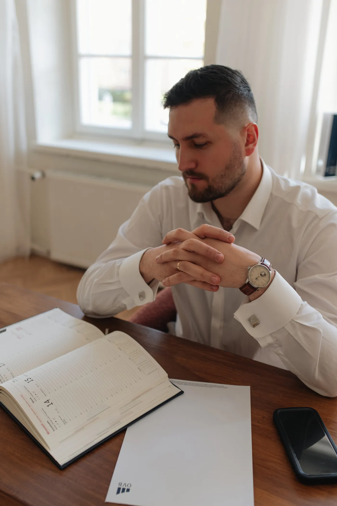
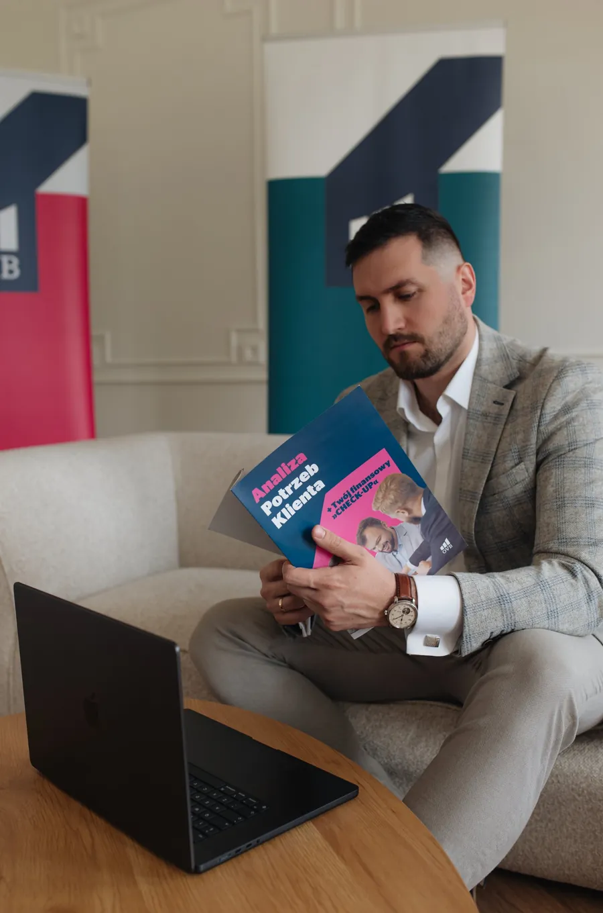

Nie sprzedaję polis. Buduję relacje, które trwają.
Ubezpieczenie ma sens dopiero wtedy, gdy w trudnym momencie ktoś odbierze telefon i wie, o kogo chodzi.
[Twoja historia, 2–3 zdania: skąd jesteś, od kiedy doradzasz i co Cię do tego przyprowadziło.]
Dlatego nie zaczynam od produktów. Zaczynam od człowieka: od rodziny, od zobowiązań i od tego, czego ktoś naprawdę się obawia. Dopiero kiedy to rozumiem, szukamy rozwiązań dla życia i rodziny, zdrowia, dochodu i spłaty kredytu.
Nie pracuję z każdym. Pracuję z osobami, które chcą to zrobić dobrze i są gotowe poświęcić na to chwilę uwagi. Wtedy mogę dać z siebie wszystko.
Bartosz Śliwecki
Na czym mi zależy i czego nie robię.
Na czym mi zależy
- Rozumiem, zanim doradzęNajpierw słucham. Propozycja powstaje z Twojej sytuacji, nie z cennika.
- Jasne porównaniePokazuję różnice w zakresie i cenie tak, żebyś mógł zdecydować sam.
- Jestem po podpisaniuPrzegląd polisy, gdy zmienia się życie. Pomoc, gdy trzeba z niej skorzystać.
Czego nie robię
- Nie naciskamDecyzję podejmujesz w swoim tempie. Nic nie podpisujemy na pierwszym spotkaniu.
- Nie proponuję zbędnych rzeczyJeśli czegoś nie potrzebujesz, usłyszysz to ode mnie wprost.
- Nie obiecuję na wyrostGdy nie będę mógł pomóc, powiem to i wskażę, gdzie szukać dalej.
Pierwsza rozmowa to poznanie się, nie sprzedaż.
Spotykamy się, żeby sprawdzić, czy w ogóle mogę Ci pomóc. Jeśli nie, rozstajemy się w dobrej atmosferze. Jeśli tak, robimy to krok po kroku.
- i.
Rozmowa
Poznaję Twoją sytuację: rodzinę, zobowiązania i to, co chcesz chronić. Bez żadnych zobowiązań.
- ii.
Analiza
Przygotowuję propozycje i porównuję je tak, żeby różnice w zakresie i cenie były jasne.
- iii.
Decyzja
Wybierasz w swoim tempie. Po podpisaniu polisy nadal jestem do dyspozycji, gdy pojawią się pytania.

Polisę podpisuje się raz. Być obok trzeba latami.
Najważniejsza chwila w tej pracy nie przychodzi przy podpisaniu umowy. Przychodzi wtedy, gdy ktoś naprawdę potrzebuje pomocy i wie, do kogo zadzwonić.
Jeśli chcesz to przemyśleć razem, napisz do mnie.
Odpowiadam osobiście. Napisz kilka zdań o tym, co chcesz zabezpieczyć, a zaproponuję termin rozmowy.
Nie każda rozmowa kończy się współpracą. To w porządku, bo obu stronom powinno na niej zależeć.
Do kupienia online
Kilka prostych ubezpieczeń możesz kupić samodzielnie przez internet. Linki prowadzą prosto do stron towarzystw.
- Ubezpieczenie szkolne NNWUNIQA
- Ubezpieczenie szkolne NNWSignal Iduna
- IKE / IKZEEsaliens
-
OC pilota dronaCompensa
Kod zniżki przy zakupie: 128169